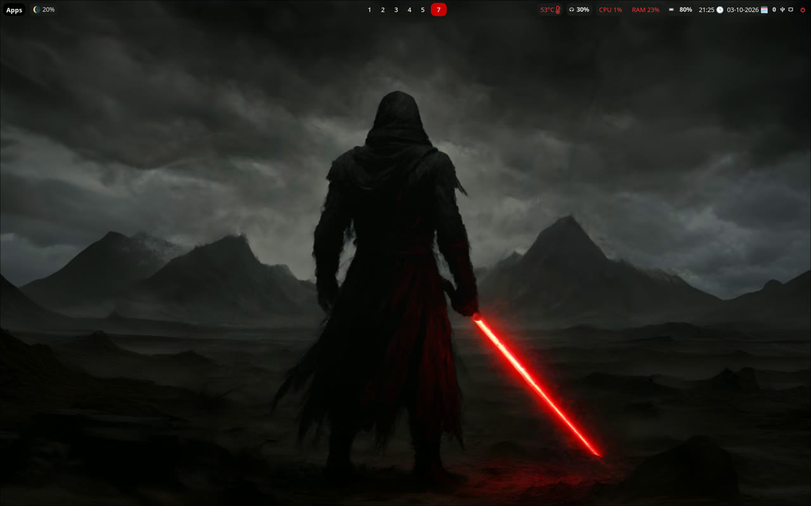
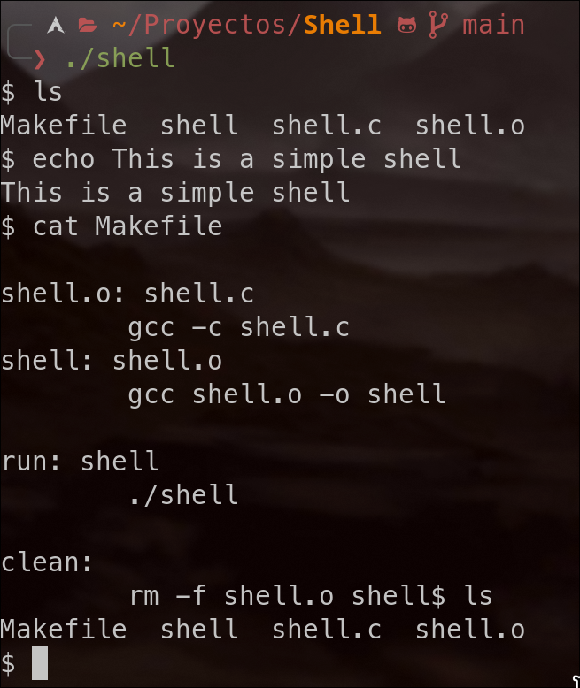
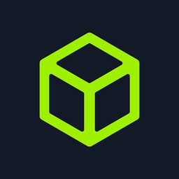
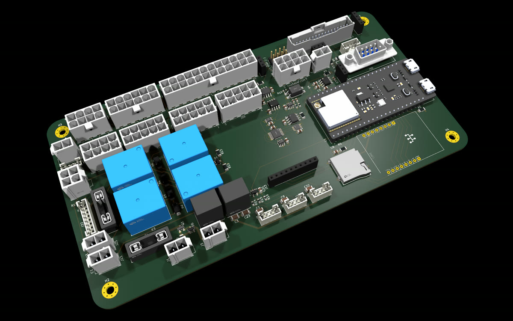
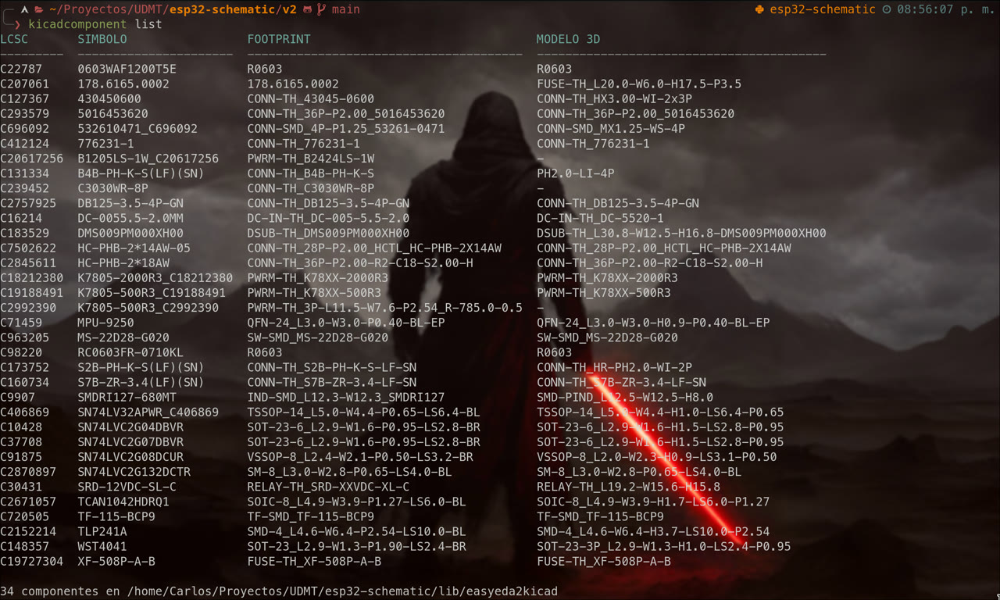

Projects
-
Robotics · High school
Robotic arm
Built in high school, with no prior experience and no outside help: an arm made from wood and micro servos, moved in real time with a joystick connected to an Arduino.
- Arduino
- C++
- Servos
-
Robotics · High school
Drone
Also built in high school, on my own: a quadcopter on a wooden frame carrying the first PCB I ever designed, controlled over Bluetooth from a phone app I made with MIT App Inventor, a free tool from MIT. It never flew properly because of design mistakes, but it was my starting point in hardware.
- Arduino
- C++
- PCB design
- Bluetooth
- MIT App Inventor
-
Game · First year
Survival Shooter
My first game, made in my first year of university: an Asteroids-style space shooter where you fly a ship, destroy asteroids and stars and pick up shields for extra lives. Each player logs in and their scores are saved.
- Java
- Swing
-

Linux
Arch Linux + Hyprland desktop
My own Arch Linux desktop on Hyprland, built entirely from scratch by me: custom SDDM theme, development tools and a pentesting environment. I then automated the whole setup with my dotfiles, so I can reinstall it quickly if I ever lose it.
- Shell
- Arch Linux
- Hyprland
-

Systems · C
Unix shell
A small shell written in C that reads commands, splits them into arguments and runs them in child processes with fork and execvp.
- C
- POSIX
- Make
-

Cybersecurity
Hack The Box labs
Courses and vulnerable machines on Hack The Box to learn networking, Linux and offensive security, working from my own Kali Linux setup.
- Kali Linux
- Networking
- Shell
-
Industrial automation
Siemens PLC programming
Automation programs for Siemens PLCs in TIA Portal, using structured text (SCL), ladder (LAD) and function block diagrams (FBD), plus pneumatic circuits in FluidSIM.
- TIA Portal
- SCL
- LAD
- FBD
- FluidSIM
-

Hardware · PCB
Motorbike control board
UDMT's central PCB, designed in KiCad. An ESP32 connects the sensors and controllers and manages the different states of the bike. Work in progress.
- KiCad
- ESP32
- C/C++
-

Tooling · Python
kicadcomponent
Command-line tool that adds and removes LCSC/EasyEDA components in a KiCad project, keeping symbol, footprint and 3D model in sync. Published on PyPI, with tests and CI.
- Python
- KiCad
- GitHub Actions
- PyPI
-
Web
This portfolio
Hand-written HTML and CSS, without frameworks, to learn web layout from the ground up: grid, flexbox and responsive design.
- HTML
- CSS
-
Grafana dashboard
Embedded · IoT
MotoStudent telemetry
Real-time telemetry for UDMT's electric racing motorbike. ESP32 nodes read the CAN bus and publish over MQTT to InfluxDB, and Grafana dashboards show the data live.
- ESP32
- C/C++
- CAN
- MQTT
- InfluxDB
- Grafana
-
QEMU boot screen
Low level · OS
Hello World kernel
A bootloader in assembly and a minimal x86 kernel in C, booted with GRUB in QEMU, to understand what happens between the power button and the first line on screen.
- Assembly
- C
- GRUB
- QEMU
-
photo of the car
Robotics · Mobile
Bluetooth RC car
Car built around an Arduino Nano with a Bluetooth module, motor controller and servo, driven from an Android app I made with Android Studio. Part of my robotics projects, together with a robotic arm and a drone.
- Arduino
- C++
- KiCad
- Android Studio